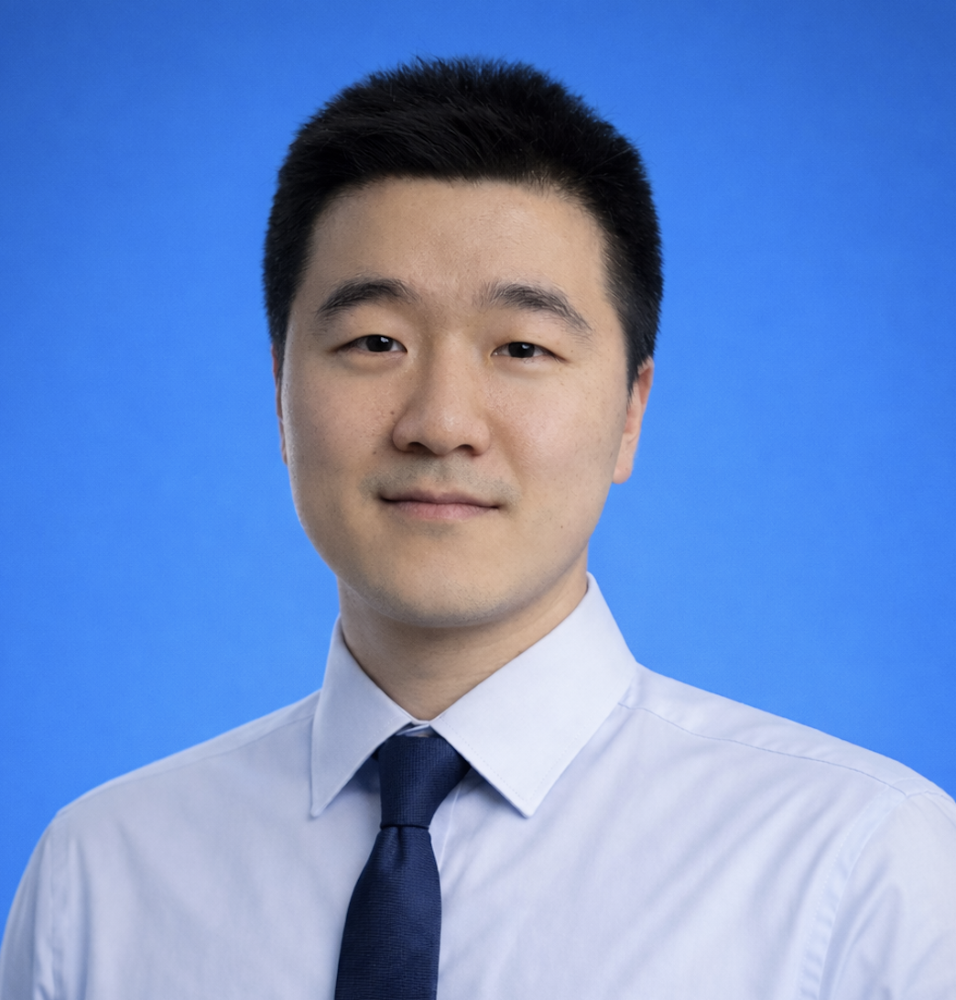

设计竞赛参与
以第一作者、第二作者身份参与多项高水平设计类学科竞赛，包括中国好创意大赛、米兰设计周高校设计展、研究生"美丽中国"创新设计大赛、IF设计奖项学生组等，斩获多项国家级、省级赛事奖项。熟练使用 Rhino、Blender、C4D、KeyShot、Creo、SolidWorks 等建模渲染软件，以及 Figma、PS 等平面设计软件，独立完成数字建模、设计素材制作等工作。
Industrial Design × Intelligent Interaction

以第一作者、第二作者身份参与多项高水平设计类学科竞赛，包括中国好创意大赛、米兰设计周高校设计展、研究生"美丽中国"创新设计大赛、IF设计奖项学生组等，斩获多项国家级、省级赛事奖项。熟练使用 Rhino、Blender、C4D、KeyShot、Creo、SolidWorks 等建模渲染软件，以及 Figma、PS 等平面设计软件，独立完成数字建模、设计素材制作等工作。
英语：大学英语六级（CET-6），497 分 · 兴趣：骑行、浏览设计论坛、冲浪
面向海洋微塑料清理、收集的水面综合设施。整体由一座基站与三个模块化子装置组成，基站主要为子装置提供能源补给与停泊功能。
多场景通用分体式养生壶，在传统功能基础上新增制冷、多品类饮品制作等模式，功能集成度高，可满足多元化使用需求。
AI-ASSISTED DESIGN · 5-PHASE CLOSED LOOP · ALL BUSINESS DATA = DESIGN ASSUMPTIONS
完整五阶段CMF闭环策略。STEEP趋势分析、三方案加权矩阵评估、最终方案含CIELAB/Pantone全规格、BOM与可持续性评估。同步完成Lumina品牌识别系统（标志、色彩、字体、包装、品牌指南）。AI工具用于趋势研究、图像生成与色彩分析。
五竞品CMF审计，三STEEP趋势分析，三方案加权评估。最终策略：三色变体（暖橡木/薄雾灰/北欧苔绿），家具级材料语言——木纤维复合、声学毡、ZrO₂陶瓷、天然材料底座。碳足迹低于品类平均26%。
以高山地质学为材料源代码。石纹外壳、矿物阳极氧化铝、地衣灵感高视度点缀。三方案加权评估Bio-Rugged 4.70/5.0胜出。最终BOM ¥42.50（低于¥45目标），<78g，IP67。V2使用60%蓖麻油Bio-PA。
具备复合型跨学科知识体系，深耕工业设计与智能交互领域，融合计算机、人工智能相关技术，研究方向聚焦 AI 技术在实际场景中的落地应用。
AI 技术应用：熟练运用 GPT Image 2、Nano Banana、ComfyUI、Claude Code、Codex、LibTV、Seedance 等 AI 工具，可独立完成本地/在线 AI 工作流搭建，涵盖图像生成、纹理探索、代码辅助、视频生成、链路设计等全环节。
设计软件能力：精通 SolidWorks、Rhino、Blender 等三维建模软件，手绘功底扎实，可完成从概念草图到三维模型的全流程设计；熟练使用 Photoshop、Figma、Adobe Illustrator 等平面、交互软件，拥有大量赛事展板、版式设计实操经验，具备优秀的视觉审美与落地执行能力。
综合素养：对前沿数字工具、新技术保持高度敏感度，学习能力与跨平台适应力强，擅长将 AI 技术与数字化设计流程结合，落地智能化设计解决方案。